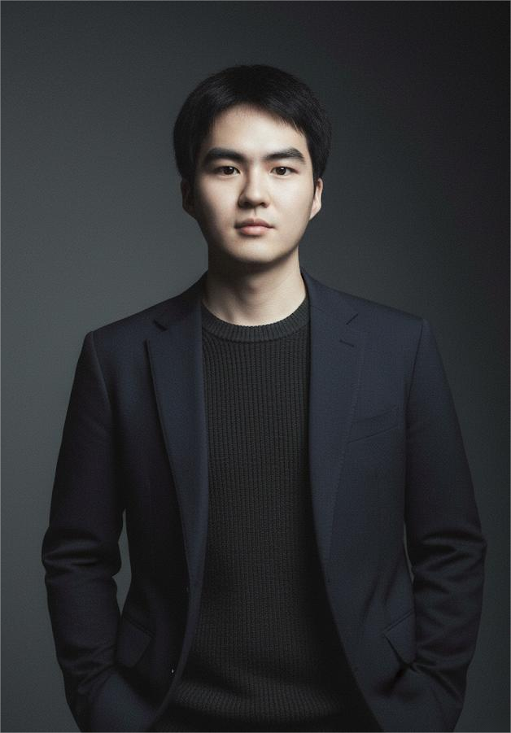
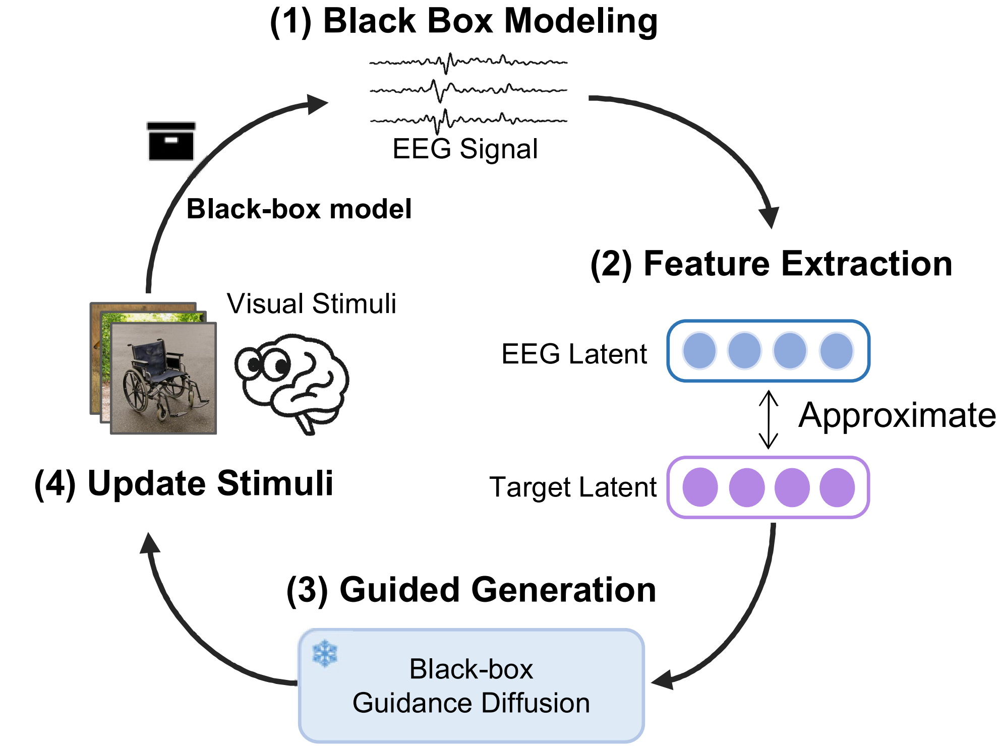
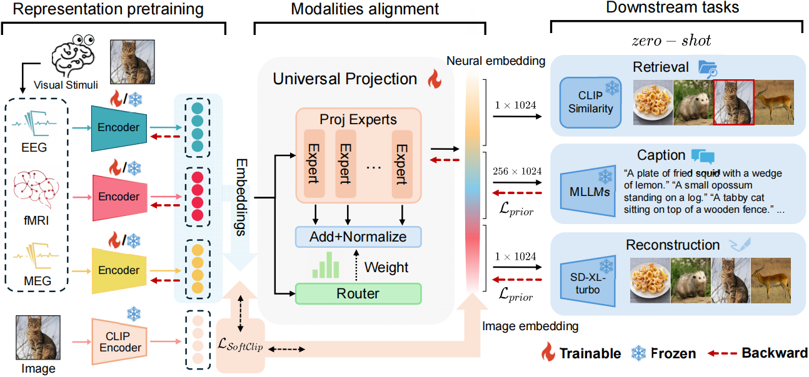
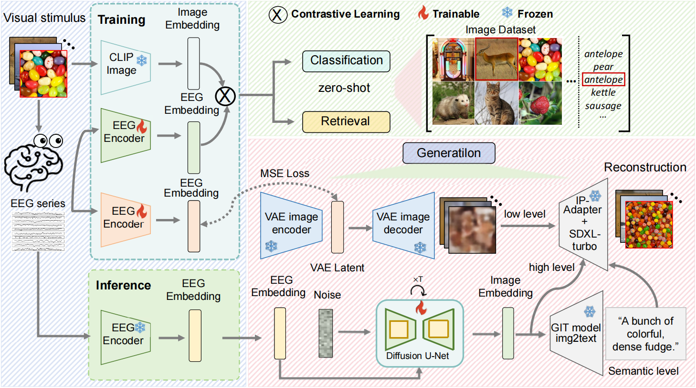

Dongyang Li「李东洋」M.S. Student, Incoming Ph.D. Student
NCClab@SUSTech, Southern University of Science and Technology |
 |
Hi! 👋 I am currently a last-year M.S. student in NCClab@SUSTech, majoring in Electronic Engineering at Southern University of Science and Technology, Shenzhen, China. During my M.S. program, I was advised by Prof. Quanying Liu. I have previously worked with Prof. Chao Zhang. On Sep 2026, I will start the Ph.D. program at Tsinghua University, Beijing, China. During my Ph.D., I will be jointly supervised by Prof. Xiaoxuan Jia and Prof. Liyuan Wang, and I plan to pursue research on Brain-Inspired AI algorithms and Brain-Computer Interfaces.
My main research interests lie in leveraging Multimodal Large Language Models (MLLMs) and Generative Models to construct Bidirectional Brain-Computer Interfaces (BCIs), thereby advancing the development of Physical AI and NeuroAI.
My mission is to architect the next generation of General Artificial Intelligence by integrating brain-inspired intelligence principles with the capabilities of MLLMs. I strive to unravel the neural mechanisms underlying human perception and motor behavior, and translate these findings into robust physical and linguistic intelligence, ultimately empowering intelligent agents to genuinely comprehend and collaborate with humans.
🎯 Feel free to contact me by email if you are interested in discussing or collaborating with me.
(* equal contribution; † corresponding author)
|
 |
MindPilot: Closed-loop Visual Stimulation Optimization for Brain Modulation with EEG-guided Diffusion Dongyang Li*, Kunpeng Xie*, Mingyang Wu, Yiwei Kong, Jiahua Tang, Haoyang Qin, Chen Wei†, Quanying Liu† International Conference on Learning Representations (ICLR), 2026 [project] [paper] [code] |
|
 |
BrainFLORA: Uncovering Brain Concept Representation via Multimodal Neural Embeddings (Oral) Dongyang Li*, Haoyang Qin*, Mingyang Wu, Chen Wei†, Quanying Liu† ACM International Conference on Multimedia (ACM MM), 2025 [project] [arXiv] [code] |
|
 |
Visual Decoding and Reconstruction via EEG Embeddings with Guided Diffusion Dongyang Li*, Chen Wei*, Shiying Li, Jiachen Zou, Quanying Liu† Advances in Neural Information Processing Systems (NeurIPS), 2024, Poster [project] [arXiv] [code] |
Conference Reviewer for ICLR, ICML (2026 Silver Reviewer), NeurIPS, ACL, KDD, AAAI.
Last update: May 2026 by Dongyang Li